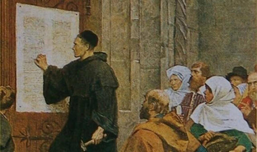

Martin Luther
The German monk who reformed Christianity

Maritin Luther was a German theologian and religious reformer who was the catalyst of the 16th-century Protestant Reformation.
The story of Martin Luther's life
- Early Life - Luther's family relocated from Eisleben to Mansfeld, a small town 10 miles (16 kilometers) to the northwest, shortly after his birth. Hans Luther, who made a fortune in the local copper refining industry, was elected to the Mansfeld town council in 1492. Apart from his recollections as an old man, there are few sources of knowledge about Martin Luther's childhood. Luther was sent to nearby Magdeburg in 1497 to attend a school run by the Brethren of the Common Life, a lay monastic order whose focus on religious piety seems to have left an indelible impression on him. He matriculated at the University of Erfurt in 1501, which was at the time one of Germany's most prestigious universities.
-
Conversion to monastic life - Luther could pursue graduate study in one of the three “higher” disciplines—law, medicine, or theology—after graduating from the arts faculty. He began his legal studies in compliance with his father's wishes. He proudly bought a copy of the Corpus Juris Canonici, a series of ecclesiastical law documents, as well as other important legal textbooks. On July 17, 1505, Luther dropped out of law school and joined the Order of the Hermits of St. Augustine, a mendicant order established in 1256, in Erfurt. Luther could have easily ignored his pledge because it was obviously made under duress; the fact that he did not suggests that the thunderstorm experience was just a trigger for far deeper motives. Luther's father was understandably enraged that he had chosen the monastery over a prestigious and lucrative legal profession. He was formally admitted to the order in the fall of 1506, and he began to prepare for his ordination to the priesthood. According to his own memory, he celebrated his first mass in May 1507 with great fear and trembling.
-
Doctor of theology - Luther, on the other hand, does not accept a monk's anonymous and mundane life. In 1507, he enrolled at the University of Erfurt to study theology. In the fall of 1508, he was transferred to the Augustinian monastery at Wittenberg, where he continued his studies at the university. The degree criteria at Wittenberg were relatively lenient since the university was young (it was established in 1502)."
-
'95 Theses' - Luther nailed his 95 Theses to the University of Wittenberg's chapel door on October 31, 1517, in defiance of Pope Leo X's latest round of indulgences to help create St. Peter's Basilica. Though Luther intended the 95 Theses to be discussion points, they set out a devastating criticism of indulgences as corrupting people's faith. Indulgences are good works, often involving monetary contributions, that popes may give to people to balance out penance for sins.
Luther also sent a copy of his letter to Archbishop Albert Albrecht of Mainz, pleading with him to stop selling indulgences. The printing press helped disperse copies of the 95 Theses across Germany in two weeks and across Europe in two months.
"Even if I knew that tomorrow the world would go to pieces, I would still plant my apple tree."
~ Martin Luther
If you want to read about the story of Protestant Reformation in the Catholic Church, proceed to this
link.